Анализируем систему команды, находим скрытые точки роста и создаём решения для устойчивого развития.
Сооснователи СинтезЛаб, executive- и командные коучи. Работаем с системой в целом, а не устраняем отдельные симптомы — помогаем командам оставаться продуктивными и стабильными в период изменений.
Четыре направления, в которых системная работа с командой даёт измеримый результат.
Синхронизируем людей в единую систему, в которой решения принимаются и доводятся до результата.
Переводим скрытые конфликты в конструктивный диалог и общие договорённости.
Развиваем устойчивость и недирективный подход руководителей — опору для всей команды.
Приводим личные, командные и бизнес-цели к одному вектору движения.
Четыре формата — под разные задачи команды и руководителя. Нажмите, чтобы узнать подробнее.
Синхронизируем вашу команду в единую систему вопреки любым кризисам и тупикам.
ПодробнееПревратим энергию хаоса в точный и реалистичный план действий.
ПодробнееТочка опоры для лидеров: ясность и устойчивость для точных решений в любые времена.
ПодробнееПереводим системное напряжение в ресурс для совместного движения к целям.
ПодробнееМы помогаем руководителям и командам развивать лидерские навыки через недирективный подход и повышение эмоционального интеллекта.
Мы верим, что через развитие осознанности и прозрачности коммуникаций команды могут оставаться продуктивными и стабильными в период изменений, а также находить наиболее подходящие инструменты для своей работы.
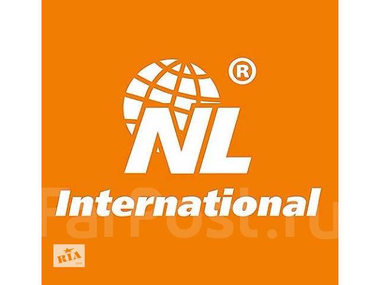
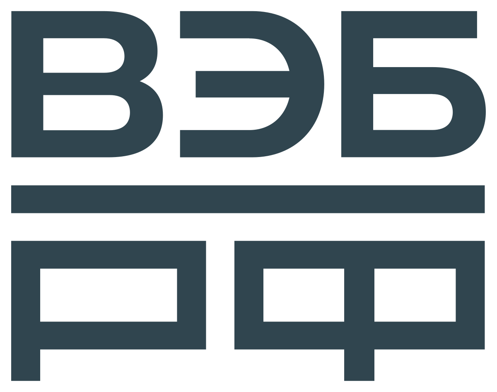
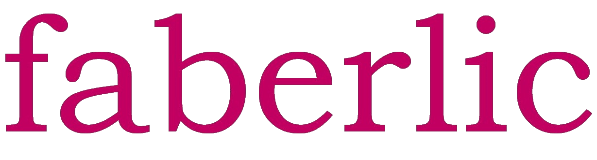
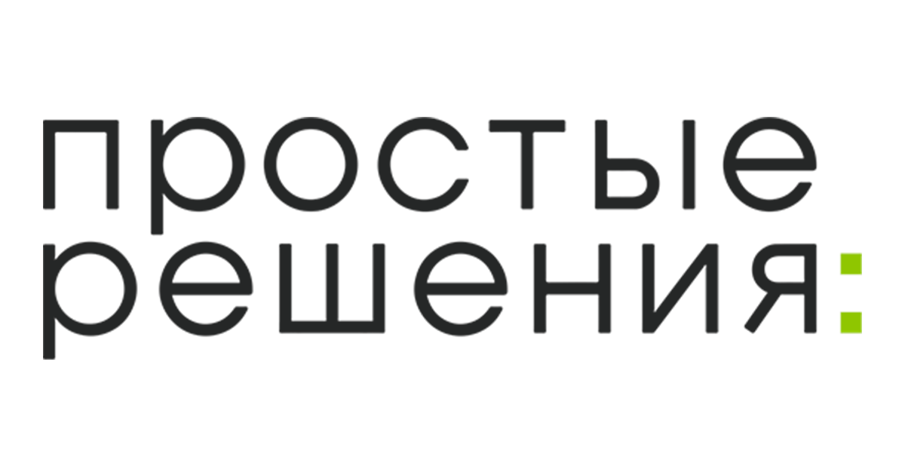
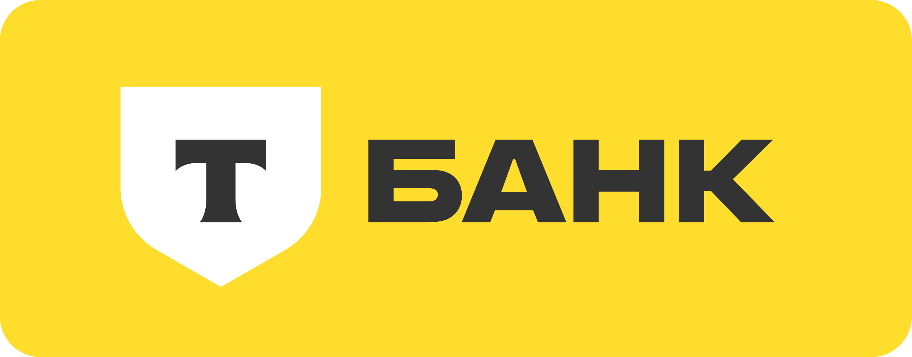
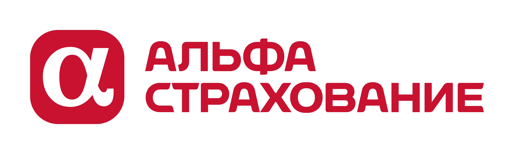
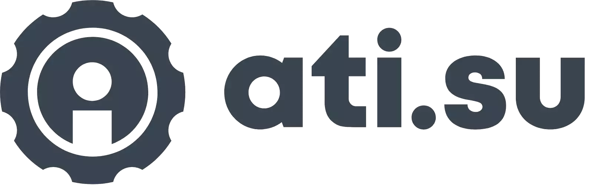
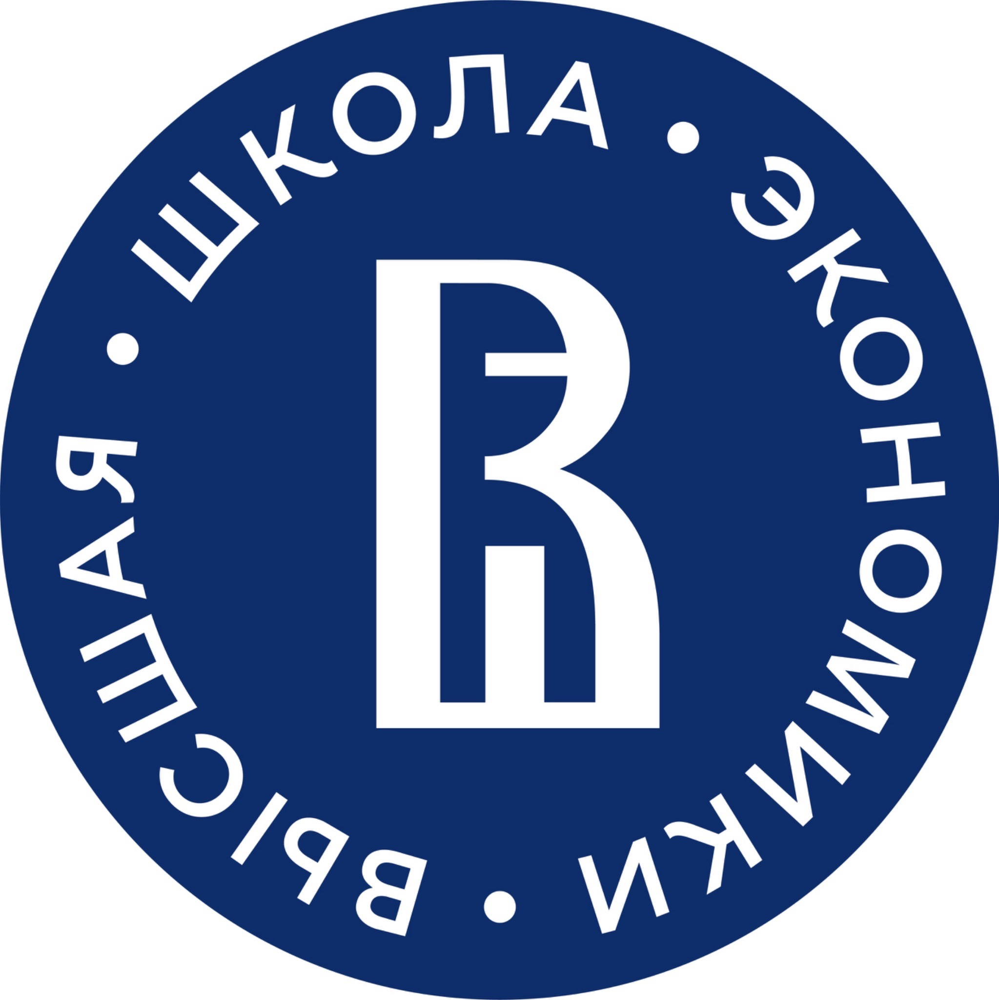
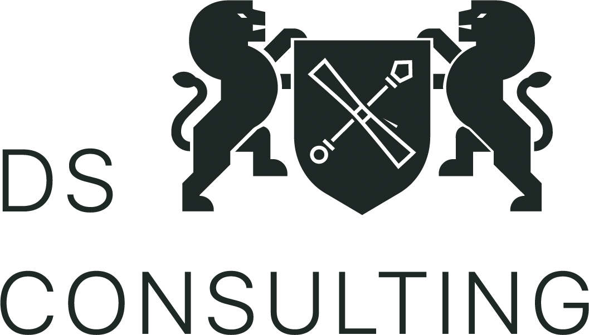
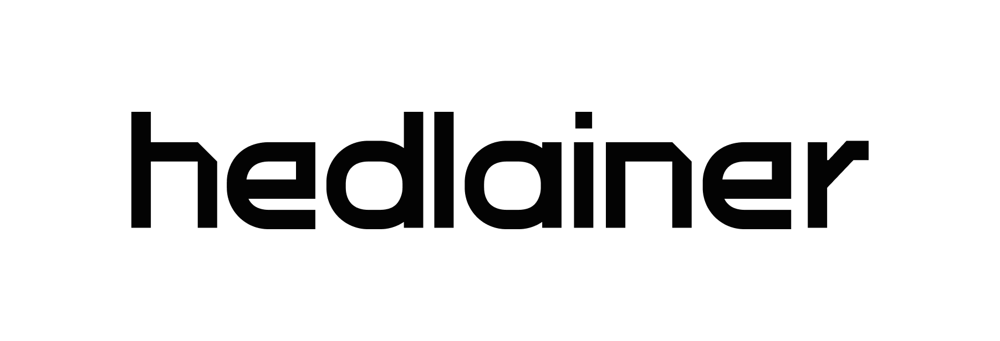
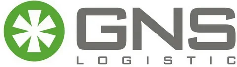
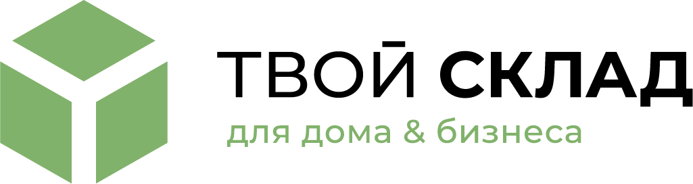
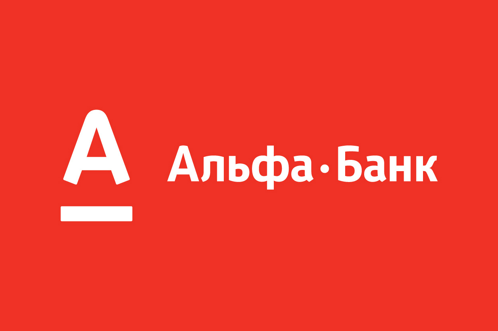
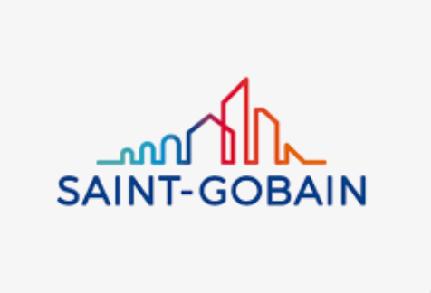
За 50 минут вы получите:
Ни к чему не обязывает. Онлайн или офлайн.
Реальные проекты СинтезЛаб. Детали обезличены в соответствии с принципами конфиденциальности.
Конкурирующие команды саботировали переход на единую IT-платформу. Договорились о ролях, целях и процессах.
Сформировали ценности и внедрили во все отделы — вплоть до взаимодействия с клиентами и партнёрами.
Управление перестраивалось на новые цели с новым лидером. Помогли пройти переход и выстроить стратегию.
Частые конфликты партнёров мешали двигать бизнес. Выстроили бережную коммуникацию и прозрачные договорённости.
Команды с разными позициями и требованиями. Наладили коммуникацию и помогли услышать друг друга.
Впервые за долгое время команда договорилась о главном без формальных кивков. Решения наконец-то стали исполняться.
Работали с системой, а не с симптомами. Это видно в подходе — ушли не «гладкие отношения», а реальная причина пробуксовки.
Индивидуальный коучинг помог вернуть опору в очень турбулентный период. Рекомендую руководителям, на которых «всё держится».
Стратегическая сессия закончилась не презентацией, а согласием, под которым каждый готов подписаться. Это дорогого стоит.
Расскажите о ситуации в команде — предложим формат и проведём бесплатную диагностику.
С бесплатной диагностики на 50 минут. Мы разбираем ситуацию в команде, определяем фокусы и предлагаем подходящий формат — без обязательств.
Формат зависит от задачи: командные сессии — от нескольких часов до полного дня, стратегические — обычно 1–2 дня. Подбираем под вашу ситуацию.
И так, и так. Диагностику и индивидуальный коучинг часто проводим онлайн, командные и стратегические сессии — чаще очно для максимальной вовлечённости.
Мы работаем с системой в целом, а не устраняем отдельные симптомы. Используем недирективный подход и развитие эмоционального интеллекта команды.
Мы честно говорим на диагностике, поможет ли формат именно в вашей ситуации. Результат — продукт совместной работы, и мы создаём для него условия.
Да. Всё, что обсуждается в работе с командой и руководителями, остаётся конфиденциальным. В кейсах детали обезличиваются.